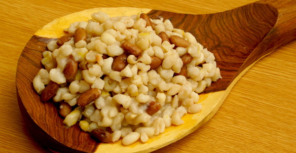

Amatshakada (samp and beans)
One of my favourite foods is amatshakada or samp. Below is a recipe for preparing samp.
Ingredients:
- 2 cups samp (cracked hominy)
- 3 cups sugar beans
- 1 onion
- 2 potatoes
- 1 large tomatoe
- salt, to taste
- 2 teaspoons curry powder
Method:
- Mix and wash the samp and beans together
- Put samp and beans in a pot and add 5 cups of water.
- Cook samp and beans until they start getting soft.
- Once the samp and beans are slightly soft, add the vegetables salt and seasonings.
- Cook for about 20 more minutes